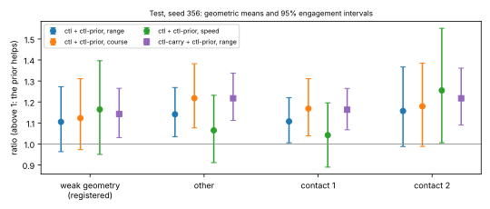
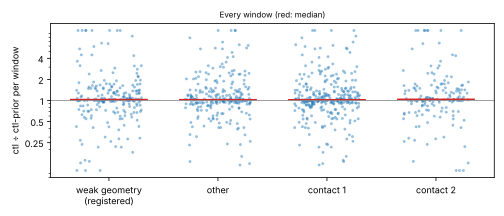
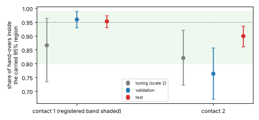
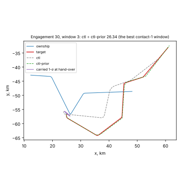

The previous window as a prior
2026-11-19 · spec 028 · seeds 354 (tuning), 355 (validation), 356 (test) · gitma2
The question
- Spec 026: the previous track as a starting guess gave no change in accuracy
- The owner: the previous track should constrain the permutations for the next leg
- So: hand on the state and its uncertainty, and put them in the fit and the evidence
The carried estimate uses only bearings before the hand-over, is widened for unseen manoeuvres, and is checked by a χ²(4) guard.
Registered rule: not shown, no harm

Weak geometry 1.105 [0.963, 1.273] (clustered by engagement [0.951, 1.279]). No upper limit below 1 anywhere.
An average shift, with many losses

Median window 1.03 and 44% of windows worse; trimmed 10% at both ends, other 1.10 [1.03, 1.19]. Gain not concentrated where the declared count changed.
The carried uncertainty

Tended contact 0.953 on test. Untended contact 0.76 on validation, 0.90 on test: the decided split's prior was overconfident.
One window where the prior helped

The best tended-contact window of the test, shown as an example, not as typical.
Not achieved
- The owner's case (no useful ownship manoeuvre in a window) never occurs in this simulator
- Whether the prior narrows the set of histories: not tested
- Hand-over defect recorded (the refit starts from the full window's fit)
Next (the owner's choice)
- Recommended: adopt ctl-prior with its guard for tended contacts up to 12 h, then close the track
- Or: an ownship holding course for 1–2 h, which answers the owner's question directly
- Or: a registered joint solve over consecutive windows (1.7× on 12 tuning pairs, 3× the time)
Write-up: /blog/2026/11/19/carry-prior · Record: experiments/20261119-cp/ · Figures: scripts/research/cp_charts.py